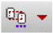
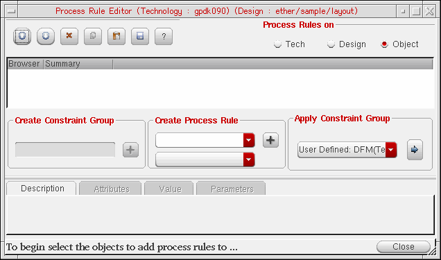
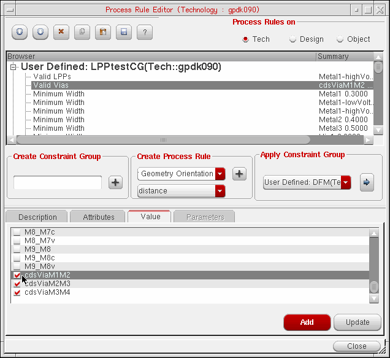
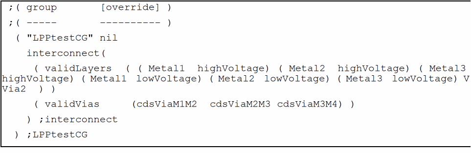

Adding the cdsVia Device to the validVias Constraint
To make an installed cdsVia device available in the Create Via form, you need to add it to the validVias constraint of the required constraint group in the technology file. You can do this by manually editing the technology file and then reloading it or by using the Process Rule Editor to edit the technology file.
You can add the cdsVia device to the constraint group that contains the purpose-aware rules. The following image shows the example of the user-defined LPPtestCG constraint group, containing various purpose-aware minWidth and minSpacing rules.
To edit the technology file by using the Process Rule Editor:
-
In the layout window, choose Window – Assistants – Constraint Manager.
The Constraint Manager assistant opens. -
Click the Process Rules Editor icon 
.
The Process Rules Editor window opens.
 - Select the Tech option in the Process Rules on section.
- In the Browser section, expand the constraint group to which you want to add the cdsVia.
- Click the Value tab in the lower section of the window.
-
Scroll to select the installed cdsVia device.
For example, the image shows thecdsViaM1M2,cdsViaM2M3, andcdsViaM3M4cdsVias selected.
 - Click Update.
-
Click Close.
The following image shows thecdsViaM1M2,cdsViaM2M3, andcdsViaM3M4cdsVias added to thevalidViasconstraint in theLPPtestCGconstraint group.

To instantiate the installed cdsVia device in your design, you can create a cdsVia.
Related Topics
Setting Up Via Creation Options
Installing a cdsVia Device in the Technology File
Return to top